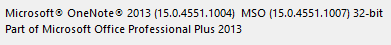

Checking the _OneNote_Version
To check which version of _OneNote_you have (32-bit or 64-bit) perform these steps:
For _OneNote_2013,2016 and later (including all _OneNote_desktop versions from Office 365)
Click on: File -> Account -> About OneNote .
This opens a dialog with detailed version information at the top. You should see something like:

For _OneNote_2010
Click on: File -> Help
You find the detailed version information in the right hand side of the page. You should see something like: